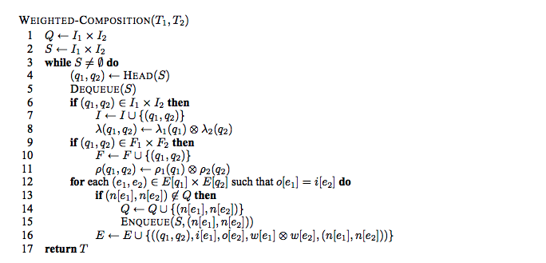
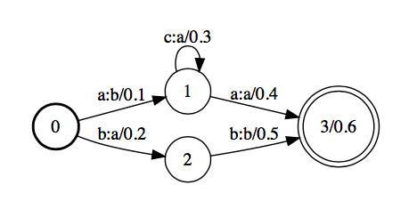
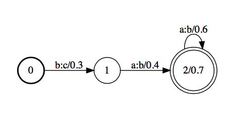
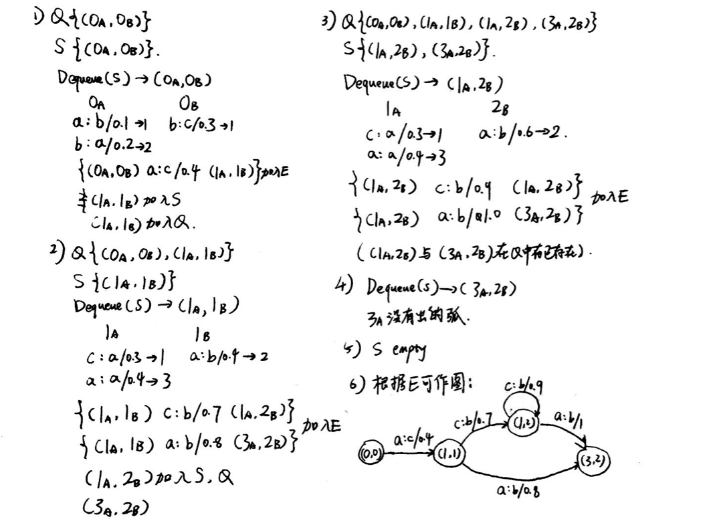
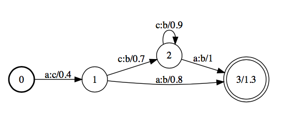
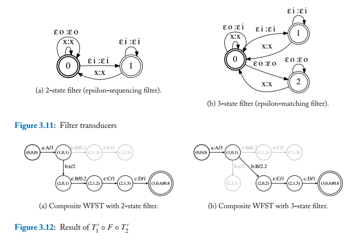

WFST详解#3
Composition
本文是WFST系列文章的其中一篇，想要了解更多可以点击这个系列的目录，欢迎您的到来～
概念
本文讲解WFST的一个重要的算法：Composition。这个算法非常重要。在语音识别中，这个算法将三音素模型的概率分布映射到最后的句子序列。
假设有两个WFST：A和B，如果A的输出是B的输入，那么便可以将二者合并起来，得到一个新的WFST：A的输入直接映射到B的输出。举一个具体的例子来说，假设有一个WFST将小写字母映射到大写字母，另一个WFST将大写字母映射到单词，合并就是直接将小写字母映射到单词。
算法
根据Moris经典的论文，Composition算法严格表示如下所示：

让我们分析一下上面算法的流程：
- 用Q来保留在合并之后会出现的状态，用S队列来保留需要用来遍历的点的组合（Q和S都由两边的WFST的一个状态组成，初始状态是（0，0））
- 进入循环之后，从S中取出一组状态，如果这组状态是两边的起始点或者终点，计算一下新的权重
- 获取到一组状态之后，分别从着两个状态出发，记录下这两个状态出去的弧的信息，进行对比，如果能够组合成一组输入输出，记录新的一个状态组合
- 如果这个组合在Q中没有出现，则是新的组合，还需要遍历，加入S当中，否则不需要再遍历
- 获取到一个组合，能够构成一个新弧，将新的弧加入E中
- 不停循环，直到S为空为止
实例
上面的算法过于理论，我们一起来根据上面的算法实际推导一下。首先，我们手里有两个WFST，如下所示：

（第一个WFST）

（第二个WFST）
下面，我们将这两个WFST合并起来。下图为手推过程，不算很严谨，但是每一个循环都写到了，理解上应该不难。

我们可以用OpenFST进行直接的检验。计算出来的结果如下所示：

我们可以看到，根据算法手推和正确结果是一致的。
epsilon的情况
当存在空转移（epsilon to epsilon）的时候，合并之后会产生很多冗余的边。因此在这里，我们引入filter来解决这个问题。在合并的时候多合并一个filter的WFST，就可以达到去除冗余的目的。

上面展示了两个filter以及filter的使用方式。选择filter的时候要根据实际情况，如果需要保留和原本一样的空转移数，则用2状态的filter，如果想要合并成更精简的WFST，就使用3状态的filter。